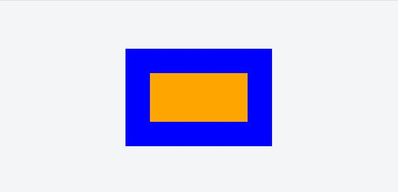

本文总结自张鑫旭老师的课程CSS深入理解之margin
margin与容器的尺寸
CSS margin可以改变容器的尺寸。
可视尺寸:clientWidth，即不包括margin在内的盒模型大小
占据尺寸:包括margin在内的盒模型大小
margin与可视尺寸
- 未设定width/height的普通block水平元素。
float元素 absolute/fixed元素 inline元素 水平方向尺寸，即垂直方向尺寸不受影响
以上为适用条件。
示例如下:
1.原始样式123<div class="wrap"><div class="test">test</div></div>123456789.wrap{width:300px;height:200px;border:2px solid #000;margin:100px auto;}.test{border:2px solid red;}
2.设置其margin-left和margin-right为负值:12345/*其余样式保持不变*/.test{margin-left:-50px;margin-right:-50px;}
同理，当左右margin设置为负值时元素会进行收缩。
具体应用:
一侧定宽自适应布局12<img width="180px" style="float:left" src="url..." /><p style="margin-left:-200px">金正恩...</p>
margin与占据尺寸
- block/inline-block水平元素均适用
- 有无width/height值均适用
水平/垂直方向均适用
具体应用:
滚动容器内上下留白123<div style="height:300px;overflow:auto;border:1px solid red"><img height="400" style="margin:50px 0;" src="url..."/></div>
margin与百分比单位
百分比margin计算规则
- 普通元素，百分比margin都是相对于容器的宽的计算的
- 绝对定位的元素，百分比margin是相对于第一个定位祖先元素(absolute/relative/fixed)的宽度计算的
margin重叠
特性
- block水平元素(不包括float和absolute元素)
- 重叠只发生在垂直方向
情景
- 相邻的兄弟元素
父级和第一个/最后一个子元素
123<div class="dad"><div class="son" style="margin-top:50px">This is son.</div></div>123<div class="dad" style="margin-top:50px"><div class="son">This is son.</div></div>123<div class="dad" style="margin-top:50px"><div class="son" style="margin-top:50px">This is son.</div></div>以上三种情形得到的父子盒模型是一样的，都相当于父元素
margin-top:50px
父子margin重叠条件:margin-top/margin-bottom
父元素非BFC
父元素无border-top
父元素无padding-top
父元素和第一个/最后一个子元素之间无inline元素分隔margin-bottom还有额外一条
父元素无height,min-height,max-height
- 空的block元素
空block元素margin重叠条件:- 元素无border
- 元素无padding
- 内部无inline元素
- 没有height或min-height
计算规则
- 正正/负负取绝对值最大值(空元素负负时，高度为0，但会影响相邻元素)
- 正负值相加
善用margin
若有多个垂直元素排列，设置margin使其有序隔开:
设置margin:auto
对于不设置宽度而水平方向充满容器的元素:
若margin-left``margin-right一侧定值，一侧auto,则auto侧为剩余空间大小;
若两侧均为auto，则平分剩余空间，元素居中显示。
图片为何不居中?
因为图片是inline水平，即没有设置width也不会占据整个容器
margin:auto为何不能垂直居中？
|
|
我们来想个问题:若不设置子元素height:100px，它在垂直方向上会充满容器吗？不会！
那么答案显而易见，auto是用来分配占用剩余空间的，垂直方向显然是没有充满的
如何实现垂直居中
writing-mode实现
absolute实现1
实现原理:top/left是以自身边界到第一个定位祖先元素的距离，而这个自身边界是由margin决定的，当margin为正时，边界向外延伸；margin为负时，边界向内收缩。
absolute实现2
此实现支持IE8+
首先设置绝对定位以及top,right,bottom,left值为0使得子元素充满容器
之后给子元素加上margin:auto;width:200px;height:100px;，效果如下:

margin负值定位
margin负值下的两端对齐
有时候会出现下列情形:
即在
ul中有多个设置margin-right:10px的li元素，此时在ul内部右侧出现了间隔.如何消除这些间隔?
|
|
margin负值下的等高布局
margin失效情形
inline水平元素的垂直margin无效
前提:1. 非替换元素 2.正常书写模式(writing-mode)
margin重叠
display:table-cell与margin
display:table-cell display:table-row等相关声明会使margin无效
例外：
- 对于图片，设置其为
display:table-cell不会影响margin - 对于按钮，在chrome中设置其为
display:table-cell但实际上显示为display:inline-block，同样不会影响margin
position:absolute与margin
绝对定位元素非定位方位(即未设定边距的方位)的margin值”无效”
内联特性导致的margin无效
要与基线对齐，所以margin设置到一定大小，内联元素就不再随margin值改变位置了
此时图片位置如下:
设置图片margin-top:-300px或者更大，均显示如下位置:
原因是图片底部要与文字基线对齐，受制于此，图片不能再向上移动了。
margin-start和margin-end
- 正常流向中(左至右)，
margin-start相当于margin-left - 若水平流向为右至左，
margin-start相当于margin-right - 在垂直流下(
writing-mode:vertical-;),margin-start相当于margin-top
margin-collapse
-webkit-margin-collapse:<collapse>|<discard>|<separate>
- collapse 默认重叠
- discard 忽略margin值
- separate 不重叠
参考文章: